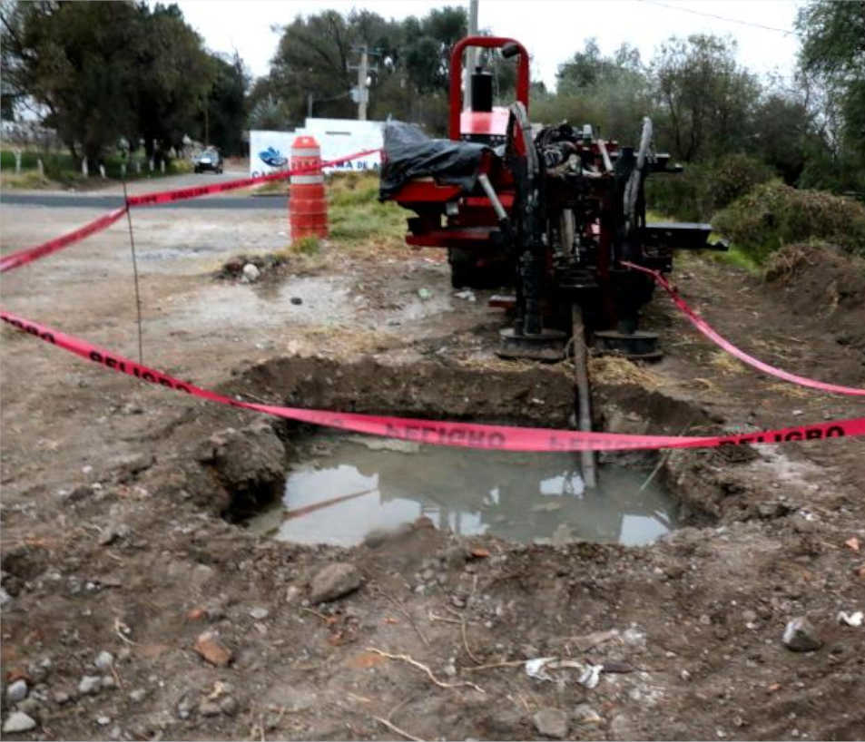

INFÓRMATE
El informarse, organizarse y protestar por los derechos y denunciar los abusos y faltas a la transparencia es y debería ser elemental en cada ciudadano y algo que debe ser inculcado desde temprana edad.
En este proyecto se denuncia el acaparamiento de los pozos y mantos acuíferos por parte de la industria de bebidas, aunque el proyecto es pequeño, se pretende crecer y llegar a una gran audiencia con el tiempo por medio de la difusión.
El problema es de carácter global, arraiga ámbitos sociales, económicos y políticos, y nos compete a todos. Puesto que la escaces en México ha llegado al alarmante 50%, va en aumento y se perfila, de no tomar acción, la privatización del agua como hace ya décadas se viene advirtiendo.
Actuar hoy para salvar el mañana o callar en la sumisión por siempre.
Actuar hoy para salvar el mañana o callar en la sumisión por siempre.

PROTESTA
En contra de Coca Cola

EVIDENCIA
Mantos acuíferos saquedos

EVIDENCIA
Privatización de pozos